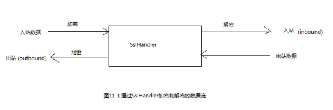
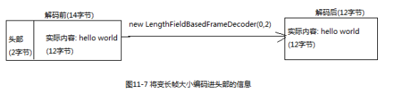

1 SSL/TSL2 Http/Https2.1 Http编码器、解码器和编解码器2.2 聚合Http消息2.3 http压缩2.4 Websocket3 空闲的连接和超时4 解码基于分隔符的协议和基于长度的协议4.1 基于分隔符的协议4.2 基于长度的协议5 写大型数据 5.1 直接传输文件内容3.2 ChunkedWriterHandler6 序列化数据6.1 JDK序列化6.2 JBoss Marshalling序列化6.3 Protocol Buffers序列化
为了支持SSL/TSL，Netty提供了SslHandler，其实现利用了javax.net.ssl包，在内部使用SSLEngine来完成实际的工作。
Netty还提供了使用OpenSSL工具包的SSLEngine实现，这个OpenSslEngine比jdk提供的SSLEngine的性能更好。

xxxxxxxxxx****** 代码清单11-1 添加SSL/TSL支持 ******public class SslChannelInitializer extends ChannelInitializer<Channel> {private final SSLContext sslContext;//如果设置为true,第一个写入的消息将不会被加密,客户端应该设置为trueprivate final boolean startTls;public SslChannelInitializer(SSLContext sslContext, boolean startTls) {this.sslContext = sslContext;this.startTls = startTls;}protected void initChannel(Channel channel) throws Exception {SSLEngine engine = sslContext.createSSLEngine();//大多数情况下,SslHandler将是第一个ChannelHandlerchannel.pipeline().addFirst(new SslHandler(engine,startTls));}}
xxxxxxxxxx****** 代码清单10-2 添加Http支持 ******public class HttpPipelineInitializer extends ChannelInitializer<Channel> {private final boolean isClient;public HttpPipelineInitializer(boolean isClient) {this.isClient = isClient;}protected void initChannel(Channel channel) throws Exception {ChannelPipeline pipeline = channel.pipeline();if(isClient){pipeline.addLast(new HttpResponseDecoder()) // http响应解码器.addLast(new HttpRequestEncoder()); // http请求编码器}else{pipeline.addLast(new HttpRequestDecoder()) // http请求解码器.addLast(new HttpResponseEncoder()); // http响应编码器}}}
xxxxxxxxxx****** 代码清单10-3 自动聚合http的消息片段 ******public class HttpAggregatorInitializer extends ChannelInitializer<Channel> {private final boolean isClient;public HttpAggregatorInitializer(boolean isClient) {this.isClient = isClient;}protected void initChannel(Channel channel) throws Exception {ChannelPipeline pipeline = channel.pipeline();if(isClient){pipeline.addLast("codec",new HttpClientCodec());}else {pipeline.addLast("codec",new HttpServerCodec());}pipeline.addLast("aggregator",new HttpObjectAggregator(512*1024)); // http消息大小限制为最大512k}}
xxxxxxxxxx****** 代码清单11-4 自动压缩http消息 ******public class HttpCompressInitializer extends ChannelInitializer<Channel> {private final boolean isClient;public HttpCompressInitializer(boolean isClient) {this.isClient = isClient;}protected void initChannel(Channel channel) throws Exception {ChannelPipeline pipeline = channel.pipeline();if(isClient){pipeline.addLast(new HttpClientCodec()).addLast(new HttpContentDecompressor()); // 客户端添加http解压缩器}else {pipeline.addLast(new HttpServerCodec()).addLast(new HttpContentCompressor()); // 服务器添加http压缩器}}}
由WebSocket定义的称为帧的特殊消息类型：WebSocketFrame
| 名称 | 描述 |
|---|---|
| BinaryWebSocketFrame | 数据帧:二进制数据 |
| TextWebSocketFrame | 数据帧:文本数据 |
| ContinuationWebSocketFrame | 数据帧:属于上一个BinaryWebSocketFrame或者TextWebSocketFrame的文本的或者二进制数据 |
| CloseWebSocketFrame | 控制帧:一个close请求/关闭的状态码以及关闭的原因 |
| PingWebSocketFrame | 控制帧:请求一个PongWebSocketFrame |
| PongWebSocketFrame | 控制帧:对PingWebSocketFrame请求的响应 |
xxxxxxxxxx******代码清单11-6 在服务端支持WebSocket ******public class WebSocketInitializer extends ChannelInitializer<Channel> {protected void initChannel(Channel channel) throws Exception {channel.pipeline().addLast(new HttpServerCodec(),new HttpObjectAggregator(65536), // 为握手提供聚合的HttpRequestnew WebSocketServerProtocolHandler("/websocket"), //如果被请求的端点是"websocket",则处理new TextFrameHandler(), // 自定义的处理TextWebSocketFrame类型数据帧的处理器new BinaryFrameHandler(), // 自定义的处理BinaryWebSocketFrame类型数据帧的处理器new CountinuationFrameHandler() // 自定义的处理ContinuationWebSocketFrame类型数据帧的处理器);}}
要想为WebSocket添加安全性，只需将SslHandler作为第一个ChannelHandler添加到pipeline中即可。
用于空闲连接以及超时的ChannelHandler
| 名称 | 描述 |
|---|---|
| IdleStateHandler | 当连接的空闲时间太长,将会触发一个IdleStateEvent事件,你可以通过在你的ChannelInboundHandler中重写userEventTriggered()方法来处理该事件 |
| ReadTimeoutHandler | 如果在指定的时间间隔内没有收到任何的入站数据,则抛出一个ReadTimeoutExecption并关闭对应的Channel. 可以在exceptionCaught()方法中检测该异常 |
| WriteTimeoutHandler | 如果在指定的时间间隔内没有任何出站数据写入,则抛出一个WriteTimeoutExecption并关闭对应的Channel. 可以在exceptionCaught()方法中检测该异常 |
xxxxxxxxxx******代码清单11-7 每隔60s进行连接的心跳检测 ******public class IdleStateInitializer extends ChannelInitializer<Channel> {protected void initChannel(Channel channel) throws Exception {channel.pipeline().addLast(new IdleStateHandler(0,0,60, TimeUnit.SECONDS)).addLast(new HeartBeatHandler());}public class HeartBeatHandler extends ChannelInboundHandlerAdapter {@Overridepublic void userEventTriggered(ChannelHandlerContext ctx, Object evt) throws Exception {if(evt instanceof IdleStateEvent)ctx.writeAndFlush(Unpooled.copiedBuffer("心跳测试", CharsetUtil.UTF_8)).addListener(ChannelFutureListener.CLOSE);elsesuper.userEventTriggered(ctx,evt);}}}
用于处理基于分隔符协议的解码器
| 名称 | 描述 |
|---|---|
| DelimiterBasedFrameDecoder | 使用任何由用户提供的分隔符来提取帧的通用解码器 |
| LineBasedFrameDecoder | 提取由行尾符(\n或者\r\n)分隔的帧的编码器 |
xxxxxxxxxx****** 代码清单11-8 处理由行尾符分隔得帧 ******pipeline.addLast(new LineBasedFrameDecoder(64*1024)) // 添加提取帧的解码器.addLast(new FrameHandler()); // 添加自定义的接收帧的处理器
用于基于长度的协议的解码器
| 名称 | 描述 |
|---|---|
| FixedLengthFrameDecoder | 提取在调用构造函数时指定的定长帧 |
| LengthFieldBasedFrameDecoder | 根据编码进帧头部的长度提取帧,该字段的偏移量以及长度在构造函数中指定 |

使用FileRegion接口的实现
xxxxxxxxxx****** 代码清单11-11 使用FileRegion传输文件的内容 ******FileInputStream in = new FileInputStream(file);FileRegion region = new DefaultFileRegion(in.getChannel(),0,file.length());channel().writeAndFlush(region);
在需要将数据从文件系统复制到用户内存中时，可以使用ChunkedWriterHandler，它支持异步写大型数据流，而又不会导致大量的内存消耗。
ChunkedInput的实现
| 名称 | 描述 |
|---|---|
| ChunkedFile | 从文件中逐块获取数据,当你的平台不支持零拷贝或者你需要转换数据时使用 |
| ChunkedNioFile | 和ChunkedFile类似,只是它使用了FileChannel |
| ChunkedStream | 从InputStream中逐块传输内容 |
| ChunkedNioStream | 从ReadableByteChannel中逐块传输内容 |
xxxxxxxxxx****** 代码清单11-12 使用ChunkedStream传输文件内容 ******public class ChunkedWriterInitializer extends ChannelInitializer<Channel> {private final File file;public ChunkedWriterInitializer(File file) {this.file = file;}protected void initChannel(Channel channel) throws Exception {channel.pipeline().addLast(new ChunkedWriteHandler()).addLast(new WriteStreamHandler());}public final class WriteStreamHandler extends ChannelInboundHandlerAdapter{@Overridepublic void channelActive(ChannelHandlerContext ctx) throws Exception {super.channelActive(ctx);ctx.writeAndFlush(new ChunkedStream(new FileInputStream(file)));}}}
JDK序列化编码器
| 名称 | 描述 |
|---|---|
| CompatibleObjectDecoder | 和使用JDK序列化的非Netty的远程节点进行互操作的解码器 |
| CompatibleObjectEncoder | 和使用JDK序列化的非Netty的远程节点进行互操作的编码器 |
| ObjectDecoder | 构建于JDK序列化之上的使用自定义的序列化来解码的解码器 |
| ObjectEncoder | 构建于JDK序列化之上的使用自定义的序列化来编码的编码器 |
需要JBoss Marshalling的相关依赖jar包。
JBoss Marshalling的编解码器
| 名称 | |
|---|---|
| CompatibleMarshallingDecoder CompatibleMarshallingEncoder | 与只使用JDK序列化的远程节点兼容 |
| MarshallingDecoder MarshallingEncoder | 适用于使用JBoss Marshalling的节点,这两个必须一起使用 |
Protobuf编解码器
| 名称 | 描述 |
|---|---|
| ProtobufDecoder | 使用Protobuf进行解码 |
| ProtobufEncoder | 使用Protobuf进行编码 |
| ProtobufDecoderVarint32FrameDecoder | 根据消息中的Google Protocol Buffers的”Base 128 Varints”整型长度字段值动态地分割所接收到的ByteBuf |
| ProtobufDecoderVarint32LengthFieldPrepender | 向ByteBuf前追加一个Google Protocol Buffers的”Base 128 Varints”整型长度字段值 |
x******代码清单11-14 使用protobuf ******pipeline.addLast(new ProtobufVarint32FrameDecoder()).addLast(new ProtobufDecoder(消息头)).addLast(new ProtobufEncoder());